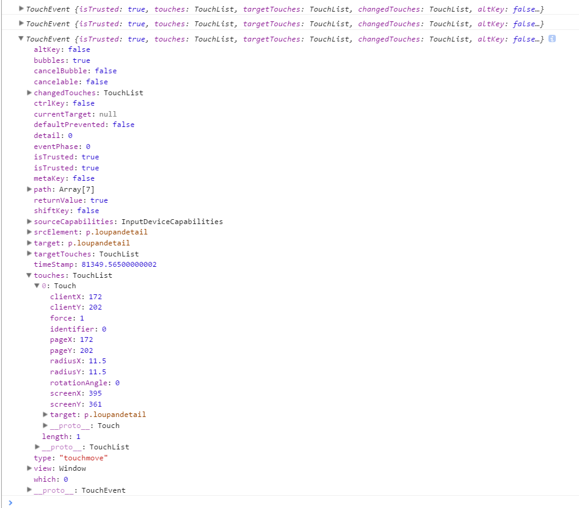

Your browser doesn't support the features required by impress.js, so you are presented with a simplified version of this presentation.
For the best experience please use the latest Chrome, Safari or Firefox browser.
top
bottom
left
right
front
back
手机页面制作知识
1、什么是REM、PX、EM
2、什么是DPR,为什么用二倍图
3、手机端事件和PC有哪些区别
什么是REM、PX、EM
rem（font size of the root element）是指相对于根元素的字体大小的单位。
em（font size of the element）是指相对于父元素的字体大小的单位。
它们之间其实很相似，只不过一个计算的规则是依赖根元素一个是依赖父元素计算。
REM参考设置
| 宽度 |
320 |
384 |
480 |
640 |
| 屏幕对应比例 |
0.5 |
0.6 |
0.75 |
1 |
| Html font-size |
10px |
12px |
15px |
20px |
| 元素宽度(px) |
100px |
120px |
150px |
200px |
| 元素宽度(rem) |
10rem |
10rem |
10rem |
10rem |
怎么控制根元素上的HTML大小呢？
<meta name="viewport" content="width=device-width, initial-scale=1" />
什么是DPR,为什么用二倍图
window.devicePixelRatio是设备上物理像素和设备独立像素的比例。
window.devicePixelRatio = 物理像素 / dips
dip或dp,（device independent pixels，设备独立像素）与屏幕密度有关。
dip可以用来辅助区分视网膜设备还是非视网膜设备。
手机端事件和PC有哪些区别
touchstart：触摸开始的时候触发
touchmove：手指在屏幕上滑动的时候触发
touchend：触摸结束的时候触发
而每个触摸事件都包括了三个触摸列表，每个列表里包含了对应的一系列触摸点（用来实现多点触控）：
touches：当前位于屏幕上的所有手指的列表。
targetTouches：位于当前DOM元素上手指的列表。
changedTouches：涉及当前事件手指的列表。
移动端click事件延迟300ms到底是怎么回事，该如何解决？
